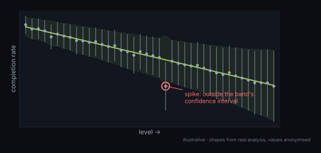
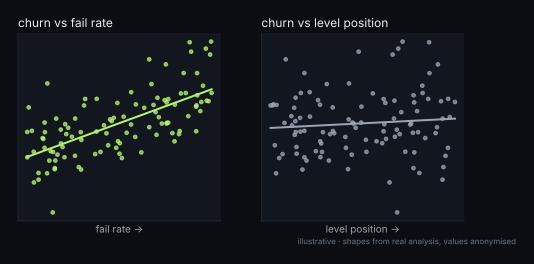

Difficulty bands from bots
Playtest bots ran every level many times. Their fail rate, combined with each level's colour count, gives a difficulty score that I checked against levels held out of the fit. Cut points then split levels into normal, hard and super-hard bands, so the progression can be sequenced deliberately instead of by feel.
One surprise: once colour count is accounted for, adding more mechanics barely moves the fail rate. Mechanics add variety more than difficulty, which matters when budgeting them.

Spikes, not noise
Raw completion rates are noisy, especially deep in the funnel where few players remain. My funnel tool puts a Wilson confidence interval on each level's rate and compares it against its own difficulty band, so it only flags a level as a spike when it falls clearly outside what its band predicts.
I used it on 161 levels from a live iOS user-acquisition campaign to flag where retuning would matter most.

Churn follows fail rate. Position barely matters.
A common assumption is that players drop off simply because they're deep into the game. On 105 live levels beyond the opening, churn followed how often players failed a level, while the level's position barely mattered. Levels that were both hard and long churned noticeably more.
That shifted the design question from "how many levels before players leave" to "which levels make them fail too often".
